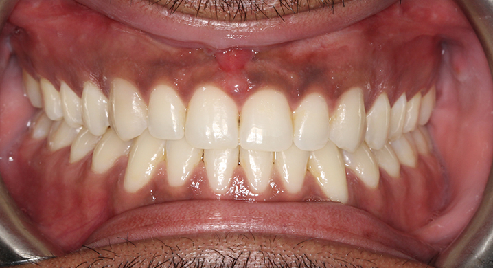
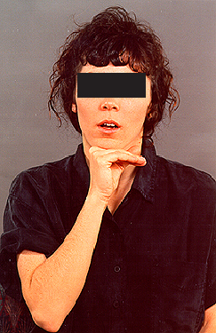
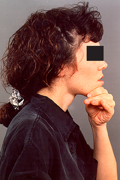
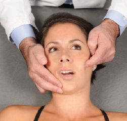
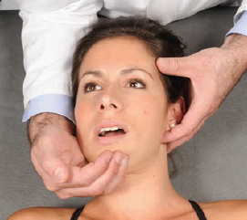
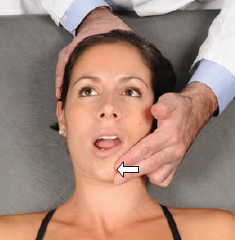
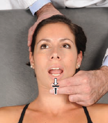

Normal dental alignment

Isometric exercise to improve jaw opening

Isometric exercise to improve jaw alignment (for underbite)

Counterstrain for a left side masseter tenderpoint

Counterstrain for a left side jaw angle tenderpoint

Muscle energy for jaw deviation. (If jaw deviates to the left, it is a left side dysfunction). Have the patient open mouth up to the point where the jaw starts to deviate, then do the isometric exercise where the physician pushes against the deviation (patient's jaw deviates to the left in the above image).

Muscle energy for restriction of jaw opening
Book. "Atlas of Osteopathic Techniques, Second Edition" By Alexander S. Nicholas and Evan A. Nicholas.
This page was last updated on
Disclaimer: Information presented in the template should be re-checked and should not be used alone to guide patient care or substitute for clinical judgement.
Note: Please copy text into the EMR prior to adding any HIPPA information. Though no information is being saved/transmitted on this site, typing private information into a web page is generally bad practice.